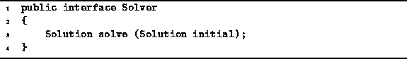

Data Structures and Algorithms
with Object-Oriented Design Patterns in Java
Data Structures and Algorithms
with Object-Oriented Design Patterns in JavaThe usual way to implement a backtracking algorithm is to write a method which traverses the solution space. This section presents an alternate, object-oriented approach that is based on the notion of an abstract solver .
Think of a solver as an abstract machine, the sole purpose of which is to search a given solution space for the best possible solution. A machine is an object. Therefore, it makes sense that we represent it as an instance of some class.
Program  defines the Solver interface.
The Solver interface consists of the single method solve.
This method takes as its argument
a Solution that is the node
in the solution space from which to begin the search.
The solve method returns the
to the best solution found.
defines the Solver interface.
The Solver interface consists of the single method solve.
This method takes as its argument
a Solution that is the node
in the solution space from which to begin the search.
The solve method returns the
to the best solution found.

Program: Solver interface.
 Copyright © 1998 by Bruno R. Preiss, P.Eng. All rights reserved.
Copyright © 1998 by Bruno R. Preiss, P.Eng. All rights reserved.